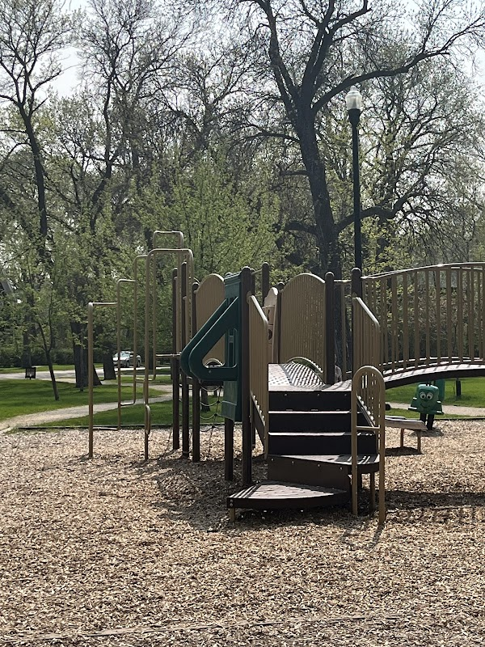

Family-friendly stops within a short walk of the Corydon Airbnb

Travelling with kids doesn't mean giving up the easy, walkable side of staying near Corydon Avenue. Between a neighbourhood park with a playground, a gelato stop, and a few relaxed places to eat, there's enough within a short walk of the Corydon/Crescentwood Airbnb to fill an afternoon without loading everyone into a car.
Peanut Park (Enderton Park)
Peanut Park, officially Enderton Park, is a two-acre pocket park at 11 Ruskin Row in Crescentwood, just a short walk from the Airbnb. It has a children's playground, mature shade trees, and a walking path that loops the park, making it an easy stop to burn off energy before or after a meal on Corydon. It's free and open year-round. Read our full Peanut Park guide for its history and more on what to expect.
A gelato or juice break on Corydon
For a treat that's easy with kids, Eva's Gelato & Coffee Bar at 1001 Corydon Ave and Nucci's Gelati at 643 Corydon Ave both serve gelato along the strip. If someone in the group wants something other than ice cream, The Mighty Kiwi Juice Bar & Eatery at 709 Corydon Ave has smoothies and juices that are easy for younger kids too.
Relaxed, kid-friendly meals
Corydon's mix of casual restaurants makes it easy to find something that works for picky eaters. Pizza is always a safe bet, Santa Lucia Pizza at 905 Corydon Ave and Tommy's Pizzeria at 842 Corydon Ave are both casual, sit-down spots. For something simpler, Tim Horton's at 949 Corydon Ave is a familiar, no-fuss option if the group needs a quick, low-key stop.
Keep an eye out for Little Free Libraries
While you're walking, watch for Little Free Libraries small book-exchange boxes tucked into front yards throughout Crescentwood and nearby neighbourhoods. They're a fun, free stop for kids to pick out a book to read during the trip; see our Little Free Libraries guide for more on how they work.
Good to know: Everything above is within an easy walk of the Corydon/Crescentwood Airbnb, so a family afternoon here doesn't need a car. Bring a stroller if you have one (the sidewalks along Corydon and around Peanut Park are stroller-friendly) and check current hours before heading out, since seasonal hours can shift.